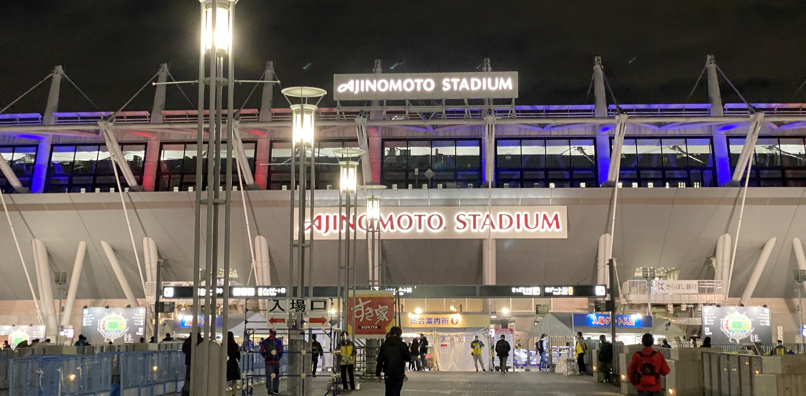
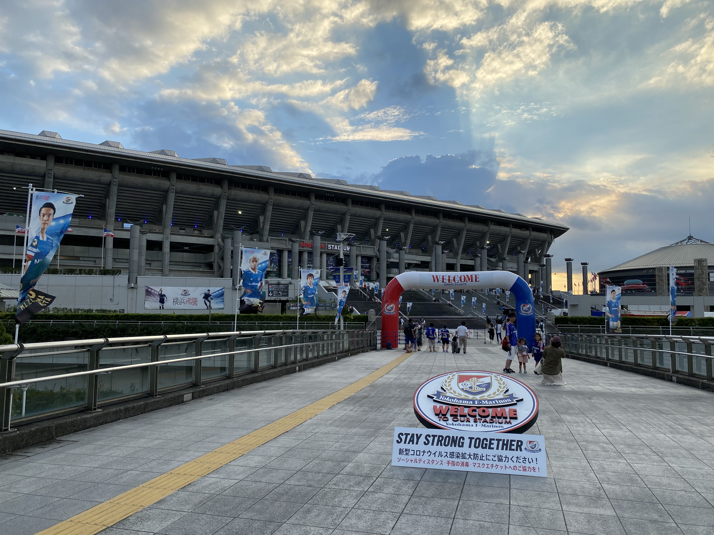
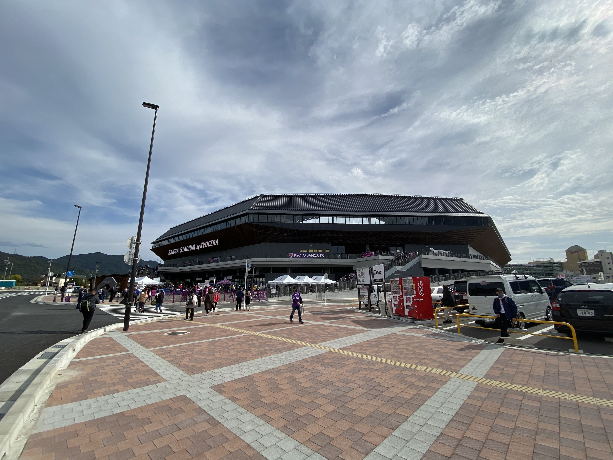

熱狂が、集う場所。

Introduction
日本には、たくさんの競技場がある。
野球、陸上、武道などなど…
その中最も多種多様で魅力的と言えるのは、サッカースタジアムだろう。
Jリーグからアマチュア、日本代表の試合まで開催される
日本のユニークなスタジアムたちを紹介していく。

船乗りたちの母港
横浜国際総合競技場、愛称は日産スタジアム。日韓ワールドカップ決勝が行われ、その後たくさんの国際的なビッグマッチが開催され、サッカーのみならず、日本スポーツ界を支え続けている国内最大のスタジアムだ。
そして横浜・F・マリノスの本拠地としてもまた、その歴史を積み重ねている。2019シーズンJ1リーグ最終節、首位で迎えた2位FC東京戦では63854人の観客が詰めかけ、トリコロールにとって15年ぶりのシャーレを見届けた。

サンガのニューホーム
サンガスタジアム by KYOCERA（京都スタジアム）は、京都サンガF.C.が2020シーズンから使用している、欧州規格の球技専用スタジアムだ。ヨーロッパのスタジアムに発想を得て、ピッチと観客席だけでなく様々な施設を備えた複合型施設になっている。アクセスも非常によく、JR亀岡駅とほぼ隣接しており、京都駅からは30分弱で到着する。
古都の戦士たちはここ亀岡の地からさらなる上を目指す。
サンガのニューホーム
サンガスタジアム by KYOCERA（京都スタジアム）は、京都サンガF.C.が2020シーズンから使用している、欧州規格の球技専用スタジアムだ。ヨーロッパのスタジアムに発想を得て、ピッチと観客席だけでなく様々な施設を備えた複合型施設になっている。アクセスも非常によく、JR亀岡駅とほぼ隣接しており、京都駅からは30分弱で到着する。
古都の戦士たちはここ亀岡の地からさらなる上を目指す。